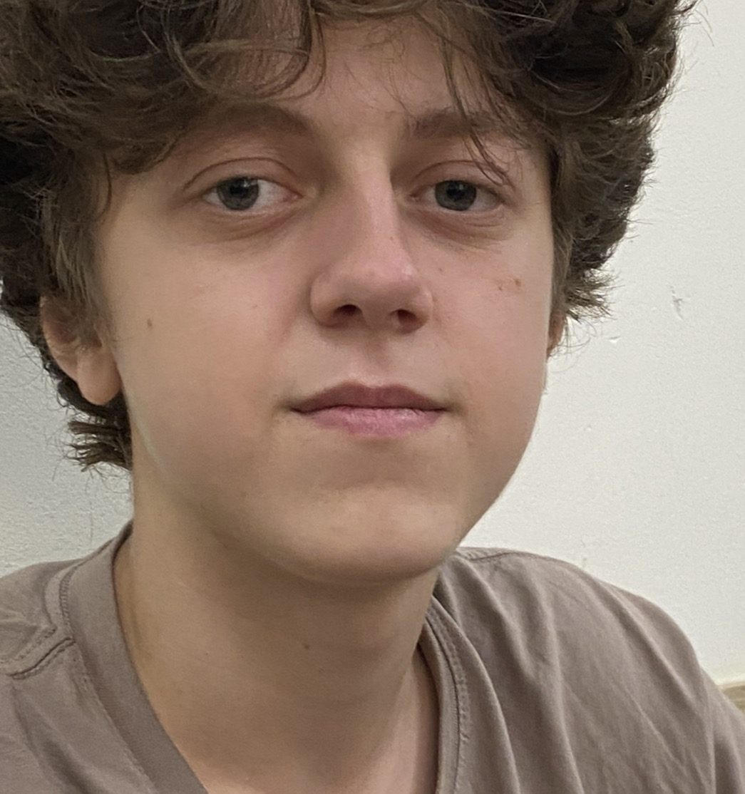
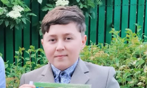
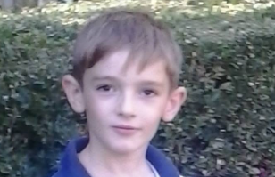

Achirus Constantin
Constantin este un tanar foarte istet si unul dintre colegii care locuiesc la camin. In timpul liber, ii place sa joace Standoff 2 si sa se bucure de cate o partida. O minte agera si un joc bun sunt combinatia care il reprezinta.
Constantin este un tanar foarte istet si unul dintre colegii care locuiesc la camin. In timpul liber, ii place sa joace Standoff 2 si sa se bucure de cate o partida. O minte agera si un joc bun sunt combinatia care il reprezinta.

Nicolae este un baiat foarte amuzant, cu un simt al umorului pe care grupa il apreciaza. Cu el, chiar si o zi obisnuita poate capata o latura comica. La fel ca Achirus Constantin, face parte dintre colegii care stau la camin.

Dan este un baiat foarte motivat, care isi imparte timpul liber intre sala si laptop. Ii place sa se antreneze si sa ramana aproape de activitatile de pe calculator. Intre sport si tehnologie, are mereu doua variante la indemana.

Eduard este un baiat foarte obraznic, venit tocmai din adancurile lumii vaste. Calatoria l-a adus la CEITI, unde vrea sa devina un programator excelent. Urmatoarele sale aventuri se scriu printre proiecte si linii de cod.

Pavel este pasionat de kickboxing, iar sportul ocupa un loc important in viata lui. Antrenamentele si miscarea sunt doua lucruri care il reprezinta. In grupa P2432, el aduce energia unui coleg obisnuit cu ritmul din ring.

Adriana se remarca prin notele mari si rezultatele bune la invatatura. In povestea grupei, catalogul este locul unde punctele ei forte se vad cel mai clar. Cand vine vorba despre scoala, are deja cu ce sa se prezinte.

Ion are o fire mai dura si priveste adesea lucrurile dintr-o perspectiva negativista. Nu este cel care vede imediat partea buna a unei situatii. In portretul grupei, el este vocea critica, greu de convins doar cu optimism.

Patricia face parte din povestea grupei P2432 si din amintirile adunate la CEITI. Intre ore, teme si zilele petrecute impreuna, fiecare coleg are locul sau. In albumul grupei, acest loc ii apartine Patriciei, alaturi de ceilalti.

Alexandru este un baiat de nota zece, foarte amuzant si cu o cultura generala dezvoltata. Umorul si lucrurile pe care le cunoaste sunt doua dintre punctele lui forte. In grupa, combinatia aceasta merita fara discutie un 10/10.

Sergiu este seful grupei P2432 si un lider foarte bun, apreciat pentru acest rol. El reprezinta grupa si are un loc important in organizarea ei. Cand colegii spun ca au nevoie de seful grupei, numele lui vine primul in minte.

Gheorghe face parte din colectivul P2432 si din anii de scoala petrecuti la CEITI. Albumul aduna numele, chipurile si amintirile colegilor intr-un singur loc. Printre ele se afla si pagina lui, alaturi de intreaga grupa.

Vladislav este un fotbalist foarte bun, iar in glumele grupei il depaseste chiar si pe Ronaldo. Fotbalul este pasiunea care il reprezinta cel mai bine. Daca facem echipa clasei, are deja locul lui in primul unsprezece.

Marin este un baiat frumos si un prieten bun, usor de remarcat datorita frezei sale. Coafura lui aminteste de Leon Kennedy si ii da un aer de personaj principal. Pentru grupa, ramane colegul cu stil si prietenul de incredere.

Salomeia se remarca printr-un simt al umorului foarte bun, care merita un loc in albumul grupei. O gluma reusita poate schimba imediat atmosfera unei zile obisnuite. La capitolul umor, ea are deja un punct forte bine conturat.

Oxana face parte din grupa P2432 si din povestea comuna a anilor petrecuti la CEITI. Acest album pastreaza cate un loc pentru fiecare dintre colegi. Pagina ei completeaza colectia de chipuri si nume care formeaza grupa noastra.

Virinea se remarca prin note excelente si rezultate scolare pe masura. Catalogul este unul dintre locurile unde reusitele ei ies imediat in evidenta. In grupa P2432, ea reprezinta foarte bine partea de excelenta la invatatura.

Constantin este un coleg nou, care lasa impresia unui baiat prietenos. Inceputul lui in grupa P2432 vine cu ocazia de a cunoaste oameni si de a lega prietenii. Prima impresie este una buna, iar povestea lui aici abia incepe.

Nicolae este un programator excelent si un prieten foarte bun, doua calitati care merg bine impreuna. Pe langa cod, are si latura aceea simpatica pe care grupa o rezuma printr-un simplu uwu. Talent, prietenie si un strop de cute.

Vladislav este un baiat foarte frumos, pentru care viitorul se vede in culorile NAVI. In povestea grupei, el este viitorul jucator de CS2 al echipei. Pana la marele transfer, ii pastram cu mandrie locul in lotul P2432.

Dragos este un baiat descurcaret, care are deja permis de conducere. Pe langa viata de elev la CEITI, are si libertatea de a se aseza la volan. In povestea grupei, el este colegul pentru care drumul continua si pe patru roti.

Ecaterina face parte din grupa P2432 si din amintirile stranse de-a lungul anilor de scoala. In acest album, fiecare nume contribuie la povestea comuna. Pagina ei pastreaza un loc printre colegii cu care imparte aceasta etapa.

Alexandrina este una dintre colegele care alcatuiesc grupa P2432 de la CEITI. Albumul reuneste chipurile si numele celor care trec impreuna prin anii de scoala. Locul ei in aceasta colectie face parte din povestea intregii grupe.

Maxim este un baiat amuzant la ore, dar si un coleg cu note excelente. La el, umorul si rezultatele scolare bune se regasesc in aceeasi descriere. In grupa P2432, arata ca poti aduce zambete si, in acelasi timp, note de top.

Petru este un baiat extrem de harnic, care se remarca prin perseverenta. Munca si dorinta de a continua sunt doua trasaturi care il reprezinta bine. In povestea grupei, este colegul care merge inainte, pas cu pas, prin efort.

Remos este pasionat de politica si are deja un rol de viitor in glumele grupei. Presedinte sau parlamentar, important este sa nu uite de colegii din P2432. Pana la alegeri, interesul pentru viata politica ramane semnatura lui.

Bogdan mai are de lucrat ca programator si este inca in proces de invatare. Chiar daca nu este cel mai bun din grupa, incearca si isi da o sansa sa progreseze. Drumul lui continua cu exercitiu, rabdare si curajul de a mai incerca.

Gabriel este un baiat chipes, cu muschi foarte mari de care este mandru. Aspectul fizic este unul dintre lucrurile care il fac usor de remarcat in grupa. In albumul P2432, el aduce un plus de forta si incredere in propria imagine.

Artemie este un fotbalist foarte bun, care se remarca mai ales prin dribling. In glumele grupei, il depaseste chiar si pe Messi atunci cand are mingea la picior. Pe terenul imaginar al P2432, adversarii au deja motive de emotii.

Sergiu face parte dintre colegii de la camin si din colectivul grupei P2432. Viata de elev la CEITI si zilele petrecute la camin sunt doua parti ale acestei etape. Albumul ii pastreaza locul alaturi de toti ceilalti colegi.

Daniel este un baiat plin de viata, cu un fel de a fi aparte si putin quirky. Tocmai aceasta nota neobisnuita ii da personalitate si il face usor de remarcat. In povestea grupei, el aduce energie si o doza de imprevizibil.

Madalina face parte din colectivul grupei P2432 si din anii de scoala petrecuti la CEITI. Albumul aduna cate un portret pentru fiecare coleg, intr-o amintire comuna. Pagina ei isi are locul printre celelalte povesti ale grupei.

Damian isi ia munca foarte in serios si are ambitii mari pentru viitorul sau in tehnologie. In glumele grupei, este viitorul CEO si milionarul care isi pregateste succesul. Pana atunci, seriozitatea ramane punctul lui de plecare.

Gabriela este una dintre colegele care fac parte din povestea grupei P2432. Anii de scoala la CEITI aduna chipuri, nume si amintiri care merita pastrate. In acest album, pagina ei completeaza imaginea colectivului nostru.

Denis este un designer de nota zece, considerat in grupa cel mai bun din Moldova la varsta sa. Talentul lui i-a rezervat deja un loc in viitoarea echipa a lui Eduard. Colaborarea este in plan, iar ideile bune au omul potrivit.

Dumitru este un voleibalist extrem de bun si, in acelasi timp, un programator excelent. Pe teren si in fata codului, cele doua pasiuni ii contureaza portretul. In grupa P2432, el imbina sportul cu tehnologia in aceeasi poveste.